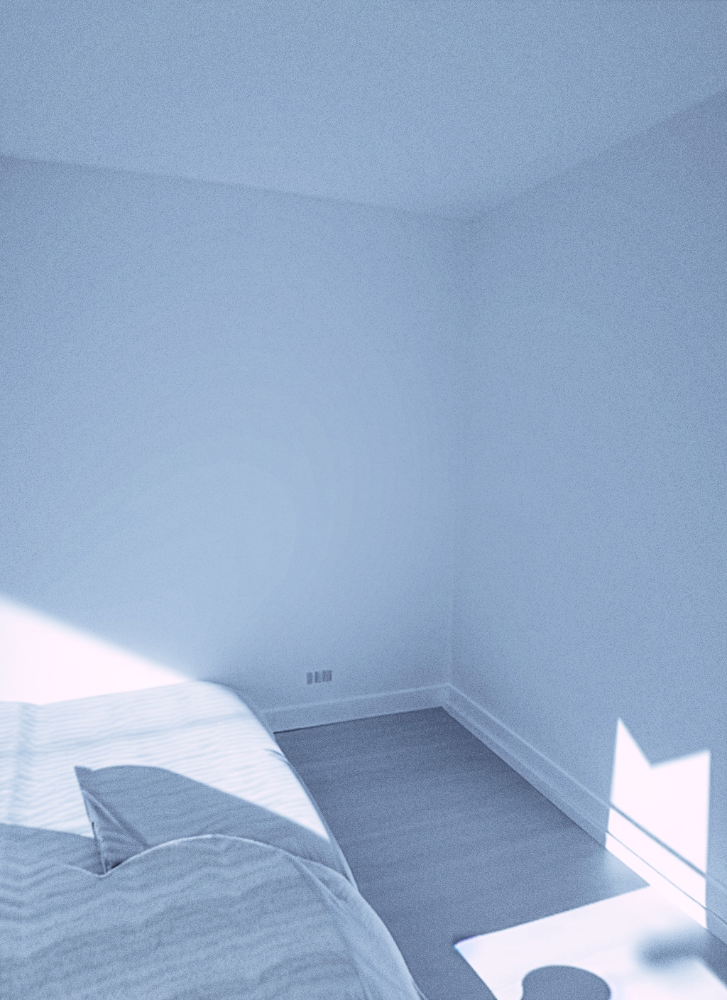

Begjæring om gjenåpning
Innledning
Undertegnede begjærer gjenåpning av saken etter Husleietvistutvalgets vedtak av 20. november 2025, jf. husleietvistutvalgsforskriften § 13 åttende ledd.
Grunnen er at jeg ikke fikk kjennskap til vedtaket før 30. desember 2025 klokken 09:47. Min BankID-brikke gikk tapt i november, og uten den var jeg fullstendig utestengt fra min digitale postkasse i Altinn. Jeg kunne fysisk ikke åpne offentlig post.
Fristen for å bringe saken inn for tingretten har derfor aldri begynt å løpe. Gyldig forkynning skjedde først da jeg faktisk kunne lese vedtaket.
Dokumentert tidslinje
- 15. november 2025
- BankID-brikke tapt—meldt umiddelbart til Sparebanken Vest
- 16. november 2025
- Melding sendt til Digitaliseringsdirektoratet om blokkert tilgang
- 29. desember 2025
- Ny BankID-brikke mottatt og aktivert
- 30. desember 2025 kl. 09:47
- Første åpning av HTU-vedtaket i Altinn
I medhold av postforkynningsforskriften § 8 anses forkynning først gjennomført når mottaker faktisk har mulighet til å ta del i dokumentet. Forkynningsdato er derfor 30. desember 2025—ikke datoen vedtaket ble sendt.
Rettslig grunnlag for gjenåpning
Husleietvistutvalgsforskriften § 13 åttende ledd åpner for gjenåpning når det foreligger gyldig passivitetsgrunn. Tap av sikkerhetsbrikke med påfølgende total blokkering av digital post er en objektiv, uforutsett og uoverkommelig hindring—klassisk unnskyldelig forsinkelse.
Jeg protesterte skriftlig mot oppsigelsen allerede 26. april 2025. Som privatperson uten juridisk bistand var jeg ukjent med kravet om særskilt tilsvar direkte til HTU. Kombinasjonen av teknisk blokkering og manglende prosessuell kunnskap utgjør samlet en tilstrekkelig unnskyldelig grunn.
Dokumentert vilje til å ivareta boligen
Den 12. april 2025 fremla jeg et detaljert oppussingsforslag til utleier. Forslaget viser konkret vilje og evne til å vedlikeholde boligen. Utleier besvarte aldri henvendelsen.

Påstander
| 1. | Forkynningsdato fastsettes til 30. desember 2025, jf. postforkynningsforskriften § 8. |
| 2. | Saken gjenåpnes, jf. husleietvistutvalgsforskriften § 13 åttende ledd. |
| 3. | Oppsigelsen kjennes ugyldig, subsidiært urimelig, jf. husleieloven § 9-8. |